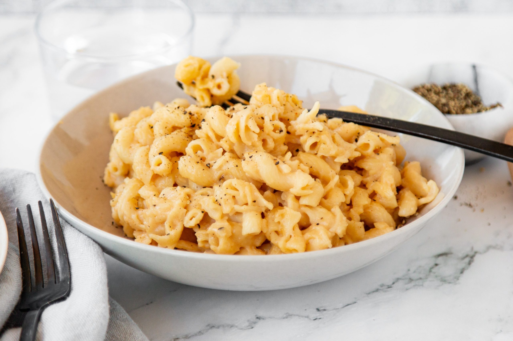

Protein Mac and Cheese

Description
This high protein mac and cheese recipe
is easy and delicious.
It's a tasty, macro friendly pasta recipe that's
big on flavor and low on fat.
Ingredients
- 2 8 oz boxes chickpea pasta, or other high protein pasta alternative
- 6 oz white cheddar cheese, shredded
- 2 oz skim mozzarella cheese, shredded
- 1/2 cup Greek yogurt
- 1/2 tsp paprika
- 1 tsp garlic powder
- pinch of salt and pepper, to taste
- 1/2 cup pasta water, reserved